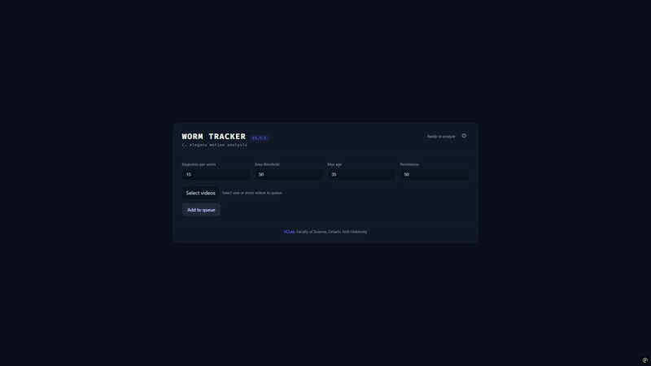
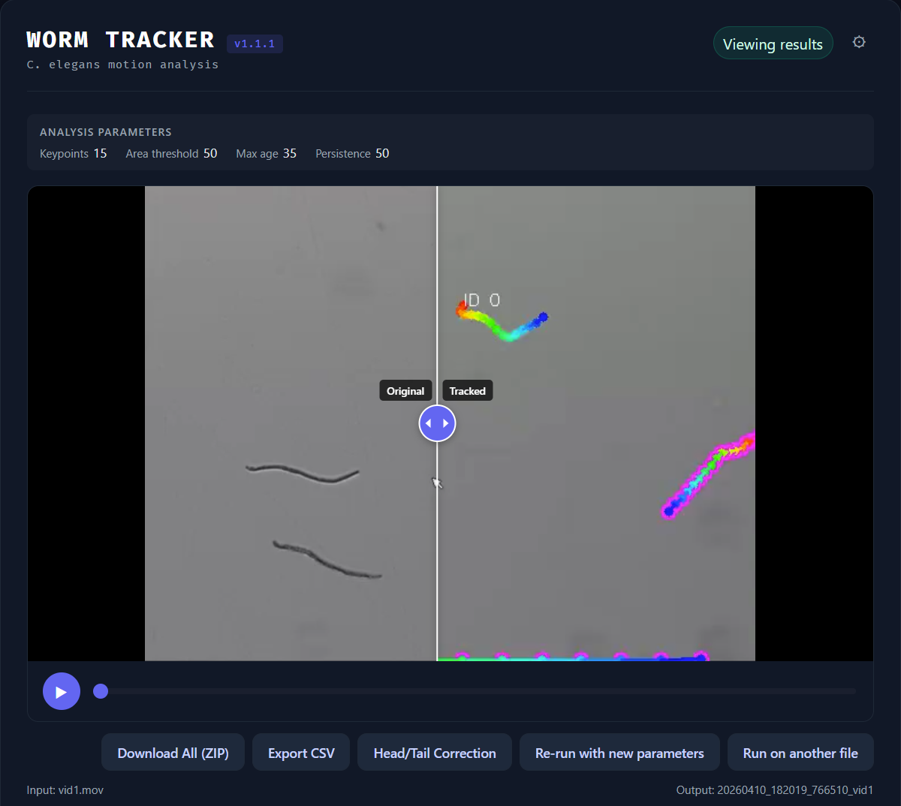
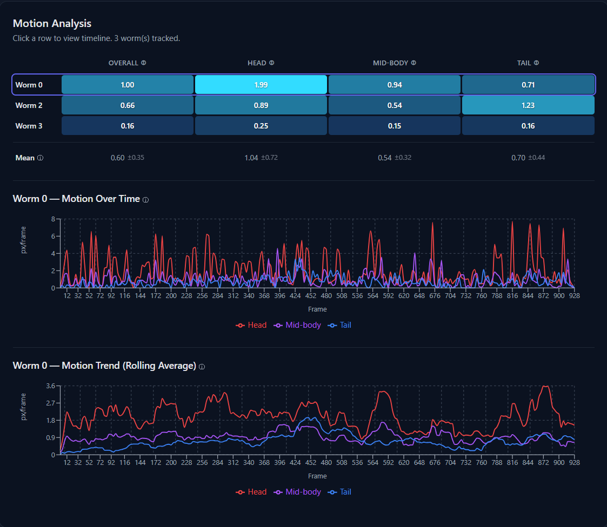
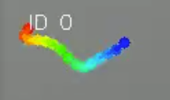

Worm Tracker
Skeleton-based tracking and motion analysis for C. elegans in video

The Problem
C. elegans are one of the most widely used model organisms in biological research. Scientists study how they move to understand neuromuscular function, drug effects, and behavioral responses to environmental changes. But tracking these worms in video is hard — they bend, overlap, change shape rapidly, and are often translucent.
Existing tools either treat worms as rigid objects (losing posture information) or require expensive deep learning models with large training datasets. There was a need for something in between: lightweight, training-free, and posture-aware.
Our Approach
The Worm Tracker uses skeleton-based tracking to capture both the identity and body posture of each worm across video frames. Instead of bounding boxes or single points, the system models each worm as a series of keypoints along its body — from head to tail — maintaining anatomical consistency over time.
The system requires no training data and runs on standard hardware, making it accessible to labs with limited computational resources.
Side-by-Side Video Comparison
Compare the original and tracked videos simultaneously with a draggable slider. Playback is synchronized so you can see exactly how the tracking overlays map to the raw footage.

Motion Analysis Dashboard
A color-coded heatmap shows overall, head, mid-body, and tail motion per worm at a glance. Click any row to view per-frame displacement charts with an interactive rolling average for trend analysis.

Multi-File Upload & Job Queue
Upload multiple videos at once — they queue and process sequentially. A full job history lets you view, download, or delete past results. Re-run any job with different parameters without re-uploading.


Color-coded keypoints along the worm skeleton — head (red/orange) through mid-body (green) to tail (blue)